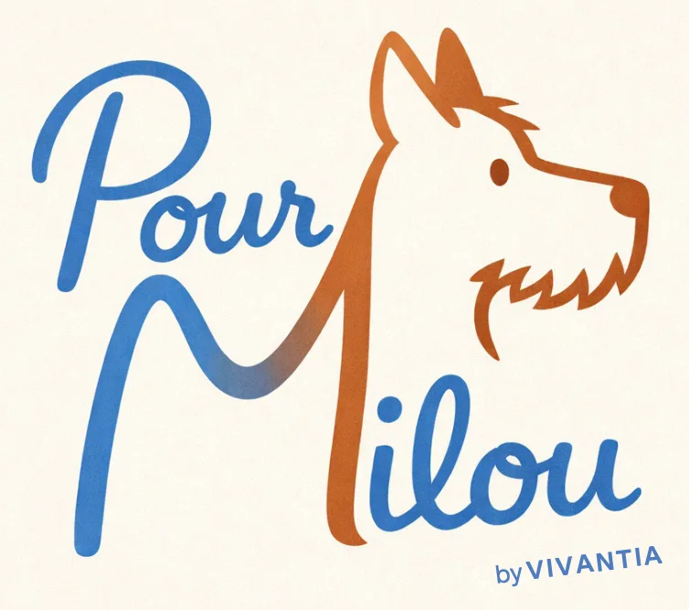
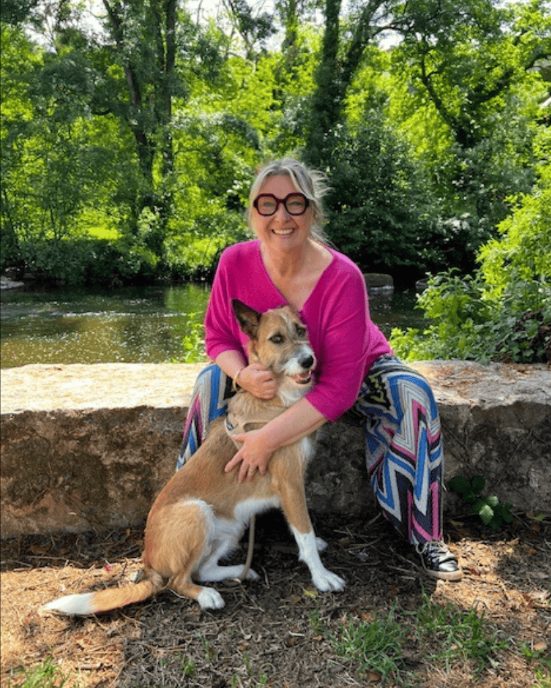
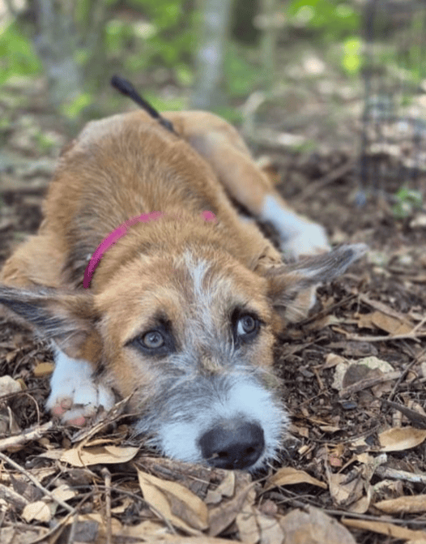
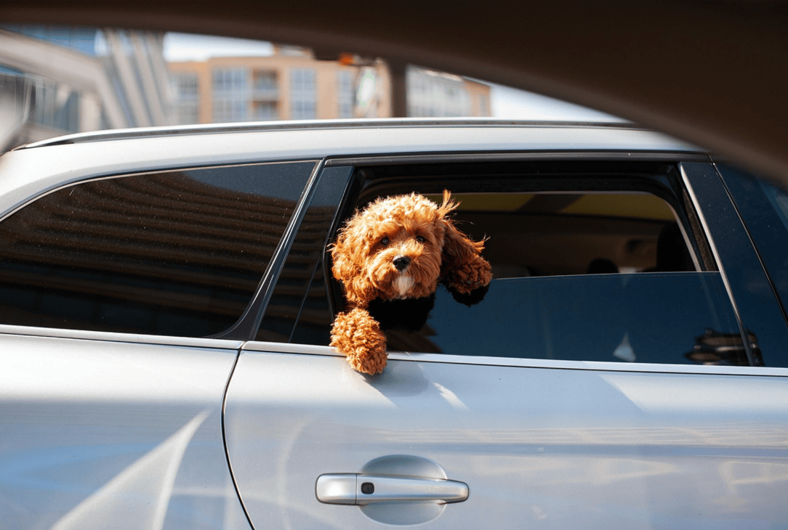
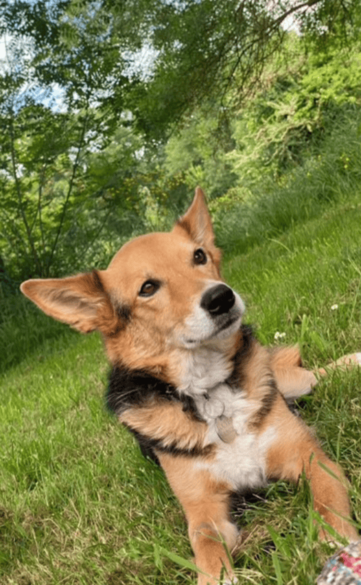
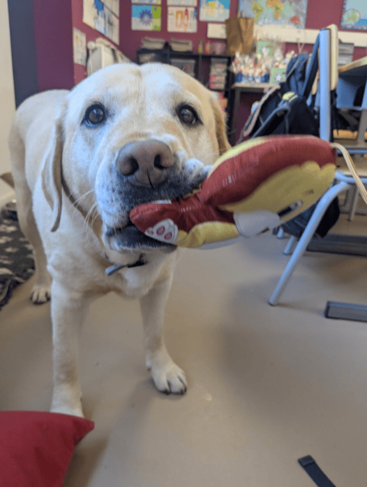
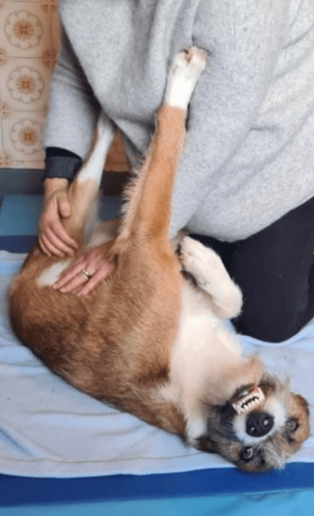

Une approche douce et globale
Massage canin, Fleurs de Bach, communication intuitive, accompagnement au deuil — pour que votre compagnon retrouve son équilibre intérieur, en douceur.

Chaque animal est unique. Chaque accompagnement l'est aussi.
Une approche douce et bienveillante qui agit en profondeur sur le corps et les émotions. Détente profonde, apaisement du système nerveux, mobilité retrouvée — pour les chiens anxieux, séniors, en récupération ou simplement pour leur bien-être.
Corps & détente38 élixirs floraux naturels pour restaurer l'équilibre émotionnel. Un mélange personnalisé, adapté au profil unique de votre animal — stress, peurs, deuil, jalousie, changements de vie.
Émotions & équilibreComprendre les ressentis et besoins profonds de votre animal. Une écoute fine pour mieux saisir certaines situations complexes et renforcer le lien humain-animal.
Lien & compréhensionUn soutien doux dans les moments de perte et de transition. Parce que perdre son animal est une épreuve profonde, accompagnée avec présence et bienveillance.
Transitions & soutienProgramme d'éducation à la connaissance du chien et au risque d'accident par morsure. Mieux comprendre le chien, prévenir les incidents, sensibiliser enfants et familles.
Prévention & éducationLe bien-être de votre animal commence souvent par le vôtre. Les élixirs floraux de Bach accompagnent aussi les humains dans leurs propres tempêtes émotionnelles.
lien émotionnel & résilience & éducation
« Pour Milou est né d’une rencontre. »
Milou a vu le jour dans les rues de la Guadeloupe. Recueilli par une association, il est arrivé dans ma vie à 5 mois portant en lui toute l’anxiété d’un début de vie semé d’incertitudes. Face à ses peurs, je me suis formée. Pas pour en faire un chien parfait, mais pour vraiment le comprendre — son corps, ses émotions, ses besoins profonds. Le massage canin, les Fleurs de Bach, la communication intuitive : chaque apprentissage est né d’une nécessité, d’un geste vers lui. Et c’est lui qui me montre le chemin.
Chaque approche que je propose — massage, Fleurs de Bach, communication intuitive — est le fruit d'une formation sérieuse et d'une pratique ancrée dans le respect de l'animal et de ses besoins réels. Je travaille à domicile, dans l'environnement familier de votre chien, pour que chaque séance soit un moment de confiance. L’accompagnement Fleurs de Bach peut se faire à distance également.
Une approche douce et naturelle pour le bien-être de votre compagnon.

Accompagner les chiots, chiens anxieux
Accompagner les changements
Accompagner le chien vieillissant. Redonner souplesse et bien-être.
Accompagner les chiens de travail
Intervention à domicile et en distanciel pour les Fleurs de Bach.Les séances de massage canin ont lieu à domicile ou dans un lieu adapté à votre chien. L’entretien conseil Fleurs de Bach peut se tenir également en visio.
Tarif de 65 € TTC la séance d’une heure (massage canin ou Fleurs de Bach)
Formule Sérénité – 4 séances – Massage ou Fleurs de Bach au choix : 220 € HT soit 55 € TTC la séance
Formule Duo (humain + animal) : 3 séances chien + 2 consultations Fleurs de Bach humain : 250 € TTC, une formule pensée pour les périodes de crise
J’ai consulté Anne pour ma chienne Berger Blanc Suisse, qui est très hyperactive et en état d’hypervigilance quasi constant. Les séances de massage lui ont fait énormément de bien : je l’ai vue se détendre progressivement, être plus apaisée et plus sereine au quotidien.
Anne est douce, attentive et très à l’écoute des besoins de l’animal. En complément des massages, elle a également proposé un accompagnement fleurs de Bach parfaitement adapté à ma chienne. L’association des deux a été un véritable duo gagnant !
Je recommande Anne les yeux fermés à toutes les personnes qui souhaitent apporter du mieux-être à leur chien ou leur chat.
Molly est une petite chienne très anxieuse, et le temps qui passe n’arrange pas les choses. En vieillissant, elle est devenue encore plus sensible et moins à l’aise dans son corps.
Les bienfaits de sa première séance de massage canin ont été immédiats. Elle s’est abandonnée dans une longue sieste profonde, comme si elle avait enfin lâché prise. Dans les jours qui ont suivi, elle était visiblement plus calme, plus sereine. Elle avait également gagné en souplesse. Un grand merci Anne, pour cette attention si douce portée à Molly. Elle le mérite tellement.
Je suis vraiment ravie du travail d’Anne ! J’ai fait appel à elle plusieurs fois pour Isys, ma petite Pinscher nain d'un an et demi, et franchement, les résultats sont là.
Les Fleurs de Bach ont été magique pour décontracter Isys et l’aider à se sentir bien au sein de notre foyer. Aujourd'hui, les massages canins lui font un bien fou. Elle est beaucoup plus sereine. Anne est d'une douceur incroyable, vous pouvez lui confier votre loulou les yeux fermés. C'est un vrai bonheur de voir Isys aussi bien dans ses pattes grâce à elle !
J'ai aussi eu l'occasion de solliciter Anne pour moi-même, je traversais une grosse période de surcharge. Je me sentais vraiment stressée et j'avais beaucoup de mal à dormir. Elle m'a accompagnée avec les Fleurs de Bach, et je dois dire que je suis vraiment très contente du résultat. Ça m'a aidée à apaiser ce stress quotidien et à retrouver un sommeil de qualité. C'est un vrai plus de se sentir écoutée et soutenue quand on a besoin de souffler un peu. Merci encore Anne !
Je réponds à toutes vos questions sur les approches proposées, leurs indications, ou la façon dont elles peuvent aider votre compagnon. N'hésitez pas à me contacter pour un premier échange, gratuit et sans engagement.
Le Conseil en Fleurs de Bach est une pratique non- conventionnelle ne se substituant pas à un diagnostic ou à un traitement médical.
Le massage n’est pas adapté dans les cas suivants, toujours consulter un vétérinaire s’il y a un doute : fièvre (température supérieure à 39,5°C), diarrhées, colites, hernie, maladie nerveuse (maladie de carré…), femelles gestantes, chiots qui n’ont pas achevé leur croissance, tumeur maligne ou kyste, déchirure musculaire, foulure, entorse ou hématome, problèmes dermatologiques : teigne, états infectieux, hors horaire des repas – après 2h.
Le massage canin ne remplace pas les soins vétérinaires.
Le vétérinaire reste le référent en cas de problèmes de
santé.
Le client peut réserver une séance pour un entretien-conseil en Fleurs de Bach ou massage canin par mail à contact@pourmilou.fr, via le formulaire de contact ou par site dédié de prise de rendez-vous.
Pour réserver une prestation par téléphone ou par mail, le client doit obligatoirement suivre le processus suivant :
La validation de la réservation confirme l'acceptation pleine et entière des présentes Conditions générales de vente. Celles-ci peuvent être modifiées à tout moment et sans préavis par Pour Milou by Vivantia, les modifications étant applicables à toutes réservations postérieures. Il est conseillé de les relire avant chaque validation de réservation.
Pour toute question ou réclamation, le client peut contacter Pour
Milou by Vivantia :
Par courrier : VIVANTIA,
Pour Milou – 41-43 Quai de Malakoff – 44000 Nantes
Par courriel :
contact@pourmilou.fr
Les informations fournies lors de la réservation doivent être complètes, exactes et à jour. Le client est seul responsable des informations saisies. Pour Milou by Vivantia se réserve le droit de ne pas accepter une réservation pour tout motif légitime, notamment en cas d'incompréhension de la demande, d'impayés antérieurs ou de litige en cours.
La responsabilité de Pour Milou by Vivantia ne pourra être engagée en cas d'inexécution ou de mauvaise exécution des obligations imputables au client, notamment lors de la saisie de la réservation ou au cours de la séance (ex. : non communication d'informations). De même, Pour Milou by Vivantia ne saurait être tenue responsable en cas de force majeure telle que définie par la loi ou la jurisprudence.
Pour Milou by Vivantia ne saurait être tenue responsable des dommages causés au système informatique du client, ni des pertes éventuelles liées à l'accès ou à la navigation sur le site. La transmission de données via Internet pouvant entraîner des erreurs, Pour Milou by Vivantia ne peut être tenue responsable de la disponibilité et des interruptions du service en ligne.
Les données à caractère personnel recueillies lors de la réservation sont nécessaires à la gestion de la séance et à l'envoi d'informations liées aux prestations. Pour plus d'informations, consultez la Politique de Confidentialité de Vivantia.
Tous les documents, textes et informations présents sur le site sont la propriété exclusive de Pour Milou by Vivantia ou sont libres de droits ou ont fait l'objet d'un achat de droit auprès de l'auteur. Toute reproduction totale ou partielle sans autorisation préalable est interdite, conformément à l'article L.122-4 du Code de la propriété intellectuelle.
Le site vivantia.fr est hébergé par un prestataire professionnel
dont les coordonnées sont disponibles sur simple demande auprès de
l'éditeur.
Conformément à l'article 6-I-2 de la loi n°2004-575 du 21 juin 2004
pour la Confiance dans l'Économie Numérique (LCEN), les informations
relatives à l'hébergeur peuvent être communiquées par l'éditeur à
toute autorité compétente en faisant la demande.
L'ensemble des contenus présents sur ce site (textes, images, logos,
vidéos, graphismes) est la propriété exclusive de SASU VIVANTIA ou
de ses partenaires, et est protégé par les lois françaises et
internationales relatives à la propriété intellectuelle.
Toute reproduction, représentation ou utilisation, partielle ou
totale, est strictement interdite sans l'accord écrit préalable de
VIVANTIA.
Conformément au Règlement Général sur la Protection des Données (RGPD – Règlement UE 2016/679) et à la loi Informatique et Libertés du 6 janvier 1978 modifiée, vous disposez d'un droit d'accès, de rectification, d'effacement, de limitation, de portabilité et d'opposition concernant vos données personnelles. Les données collectées via ce site (formulaire de contact, emails) sont utilisées exclusivement dans le cadre de la relation commerciale avec VIVANTIA et ne sont jamais cédées à des tiers. Pour exercer vos droits, contactez : anne@vivantia.fr. Vous pouvez également adresser une réclamation à la CNIL (www.cnil.fr).
Ce site est susceptible d'utiliser des cookies techniques nécessaires à son fonctionnement. Conformément à la directive ePrivacy et aux recommandations de la CNIL, votre consentement est sollicité pour tout dépôt de cookies non strictement nécessaires. Vous pouvez à tout moment modifier vos préférences via les paramètres de votre navigateur ou en contactant l'éditeur du site.
Les informations diffusées sur ce site sont fournies à titre indicatif et peuvent être modifiées à tout moment. VIVANTIA s'efforce d'assurer l'exactitude et la mise à jour des informations publiées. Cependant, VIVANTIA ne peut garantir l'exactitude, la précision ou l'exhaustivité des informations mises à disposition sur ce site. En conséquence, VIVANTIA décline toute responsabilité pour toute imprécision, inexactitude ou omission portant sur des informations disponibles sur ce site.
Ce site peut contenir des liens vers des sites internet tiers. VIVANTIA n'exerce aucun contrôle sur ces sites et n'est pas responsable de leur contenu. La présence de ces liens ne constitue pas une validation de ces sites ni de leurs contenus. Toute demande d'autorisation pour établir un lien hypertexte vers le site vivantia.fr doit être adressée à anne@vivantia.fr.
Le présent site est soumis au droit français. En cas de litige, les tribunaux français seront seuls compétents. Loi applicable : loi n°2004-575 du 21 juin 2004 pour la Confiance dans l'Économie Numérique (LCEN), Code Civil, Code de la Propriété Intellectuelle.